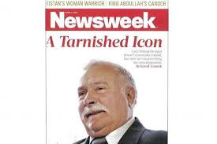
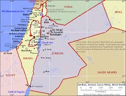
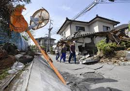

News From America:
The POTUS is now well under way. It's going to be a permanent drumbeat until November.
Lead in the water, Flint, Michigan, Why does it seem nothing is being done about this tragedy?
Who can understand the perpetual and quite frankly dangerous bickering among american leaders in DC?
By now, I am pretty
sure it is in every living room in America! What am i talking about?


News From Africa.
The issue: Islamo-terrorism and the Presidencracy
Why the unabated march of islamist-terrorism in Western and Eastern Africa? Recent islamist attacks in Nigeria, Burkina Faso, Mali, Chad, Somalia, and Ivory Coast show that the beast is rising its ugly head again. It received a deadly setback in past years in Nigeria, Somalia, Mali and, in general,the Western region of Africa with the help of local militaries, the French Army and the American Logistic
Why Presidents got reelected over and over again, in Africa?!! Here is your answer:
Indeed, it would be almost funny, if it wasn't tragic, that the same people who got criticized and ridiculed in their country's newspapers (at high cost to those editors and journalist, i should add) just keep being reelected at 80+% of the vote. Now, Trump should stop talking about "rigged votes" if what happened in Colorado is no kosher for him. In Africa, they "rig" the votes with corruption, intimidations, and extreme violence. That's all the picture above tries to illustrate.
News from Western-Europe.
The issue: The Future of the European Union
Are Brits going to join the Euro zone? Should the European Union just do away wth the Brits? Who benefits most: Brits or the EU? From, all observers, the Brits are more to gain than continental western Europe. The problem is that the Brits want the economical advantage of the EU (European Union) but none of the political and cultural that come with the membership. They do not want a cultural or political issue (like immigration from Syria, for example) be imposed upon them. But the main ticking point is the propect of an EU constitution being law in England. In History, colonial times, the Brits beat the Europeans everywhre. But, they might forget they came late to the game!?
The Syrian migrants crisis? It's a major headache for western leaders, specially the German's Angela Merkel, whose rush to accept millions of migrants received a backlash from her people, and righly so. Not only that Germany, and Europe, in general, has an Arab migrant problem for these migrants were not properly integrated into the population (in England, Belgium, France,... these migrants live in enclaves) but the surge was so quick and massive that it was quite impossible to properly vet them all. Now, Chancellor Merkel had to eat her own words and basically close the german borders. Now, Europe is pressuring Turkey into being the first line of defense again the wave of migrants from Syria; Turkey being geographically right in the middle between the East and the West.
News from Eastern-Europe.
The issue: Remember the nightmare of The Cold War!
Vladimir Putin: Nobody knows his endgame in Syria or anywhere. Now he's in, now he's not. He abruptly sent planes and arms into Syria, and, just as abruptly he allegedgly withdraw them. There are many theories as to why he behaves this way: the dire situation of Russians from sanctions after the Ukraine veiled annexion, Russia's lost of a prominent role on the world stage, a stubborn cold war mentally on Mr. Putin part. In any case, Mr Putin appears, should i say, unhinged
Lech Walesa is back in the political game but not the way he would want to, i assume. Indeed, the man from docks of Gdansk and founder of Solidarity, Lech Walesa, also former president of Poland, is facing charges or rumors of being a spy of the polish communist party. Of course, he denied it but that does not seem tom appease his fellow countryman with protests erupting in the country by people who felt betrayed. Now, Mr Walesa, himself, is now reviewing the documents that supposeddly prove that he was paid by the party communist. We'll keep you posted

News from The Middle-East.
The issue: Israel and the Palestinians
The Gaza Strip and The settlements. There are several actions being taken again Israel in the occupied territories: there is the divestment movement in America and Europe, with entities refusing to invest in companies doing business with Israel (this collide with academic institutions refusing any collaboration with israeli academics. Then, ther is the EU requests that products made by israelis in the occupied territories be labeled "made in the territories". A move that Israel opposes vehemently.
One question that i find baffling is that with all the talk of the need to rescue the syrian migrants, of their dire situations, of their perilous journey to Europe, that it's a humanitarian crisis, how come their brethens, their own arab neighbors, their own arb brothers aren't doing anything. None of them is taking in the migrants or even seven sending some relief aid. Are they saying that it's not their problem but Europe's? Or, is it that they don't want in their country people who soon or later are going to be a burden. I am absolute not against the migrants but these rae legitimate questions.

News from Asia.
The issue: Rumors of wars
What to do with North Korea missiles and escalating threat of conflict, with China standingby? D. Trump has a now ridiculed answer: nuclear arm Japan and South Korea. He really deserves the jabs. Now, the strong man from PyongYang just shamed himself with failed launch of a missile. Still, this a dangerous situation because this is a person who's so erratic and prone to violence that don't know what it could do if he feels his vanity slighted. He can just snap and do lots of damages. The more frghtening thing is that ostracizing him is the wrong way to go about this issue. The world agreed to talk to Iran, why not North Korea?
China military building in the China Sea. According to all observers, China is building up its militayr force in China Sea, including a man-made island with military installations. Also, going under the radar, is China economic expansion in Africa. China is building everything in Africa: from roads to schools to stadiums to housing to massive buildings. And, it's not hard to imagine the qui pro quo China gains out these deals. If you combine this with its military buildup, you a nation gearing up for a world class game.
TODAY, WE ARE ALL JAPANESE due to the earthquake

The Opinion Page
The Columnistes
Assane M. Ndoye:
Senegal just had its elections. Funny! They have the same people running for offices
Margarette Williams:
The democratic debate4, last night, was a painful event to watch with Mrs. Clinton and Mr. Sanders showing no love lost, talking over each other. It was tense and disappointing. We hope not to see this again. Wll, it's probable their last debate together. Thank god!
Albert Ronson:
There was this article in Salon magazine about the so called "anger" of republican voters. What's interested about the article is that it explain the anger the result of right-wing media interested in their bottom line wiping up the rage to fill up their pockets. So, it's not political but economical. I always thought so. So what for the longterm of the republican party?
Unnoticed News
Does anyone remember when Republican used to joke about the age and the lack of diversity of the Democratic presidential candidates field, saying that their field offered youth, diversity, principles to republicanism? Today who's laughing? Even Republicans say they are "embarassed" by their candidates. What an irony!
Celebrating Israels Independence Day last month at U.C.L.A. Some students said that while they had never hidden that they were Jewish, they felt uncomfortable voicing their support for Israel.
Was "the White Oscars" debacle a legitimate issue? Do we need a BET Award? or Latin Music Award? or Country Music Award? And, for that matter, those endless: "Dominican, Puerto-Rican, Israel, St. Patrick's, Carribean, ItalianColumbusDay,etc...parades" Add the month of....Yes, getting too busy around here!
What ever happened to D. Trump tax issue? So far D. Trump's answer is:

Has anybody noticed of Mr. Huge ME D. J Trump never taking the blame. Just read this Where is the media when you need them!?
Is the T. Cruz citizenship question legitimate? It is politically settled (the answer is: just don't go there). But is it constitutionally settled? Many say no. Because the question is: had Raphael T. Cruz had to swear before acquiring citizenship or not?
Why doesn't the press talk about the long tradition of the GOP of divide and conquer by exploiting the whites anger. We all know about "The Southern Strategy". Who haven't heard about "Taking our country back"? Who haven't heard of the concept of "otherness" or, as Mitt Romney puts it "Obama just doesn't American"? What i mean is that the MSM is acting like what Trump is saying is new when it is just underneath of anything Republicans have been saying for years. He's just saying it overtly. But i just read this from Paul Krugman of The New York Times. GOP Strategy.
D. J. Trump said on Seth Meyer on 4/1/2016: "I've been pro-life all my life" What!!!!?
Is this "Americans are angry because they felt left out mostly economically and ethnically" true? Or is it something else more trivial, right under our eyes/mind: a politial divide? Read this
Humor and Gossips
Laugh At This:


Have You Heard:
The Moon wants to change out of Planetarian-System cuz Ego DJ Trump made the FatherAllSUN not hotty enough for JC's sons
The DB administration tried to remove the Cart Lady of NYC from the streets?! Boy, what a fight she gave them!!!
A plane lands on a highly busy Highway but nobody got hurt. What? i guess the moon and the sun are still coming back to enliven us. JC is still paying for our sins.